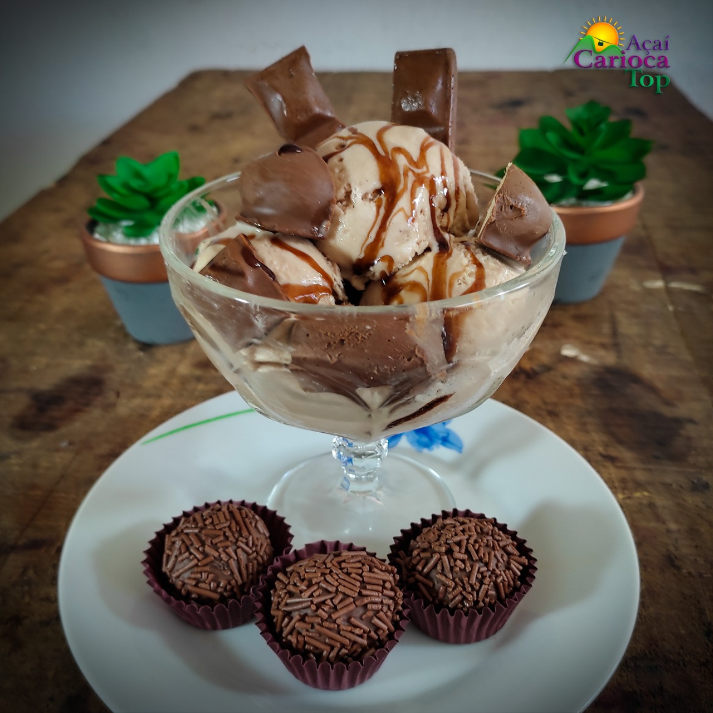
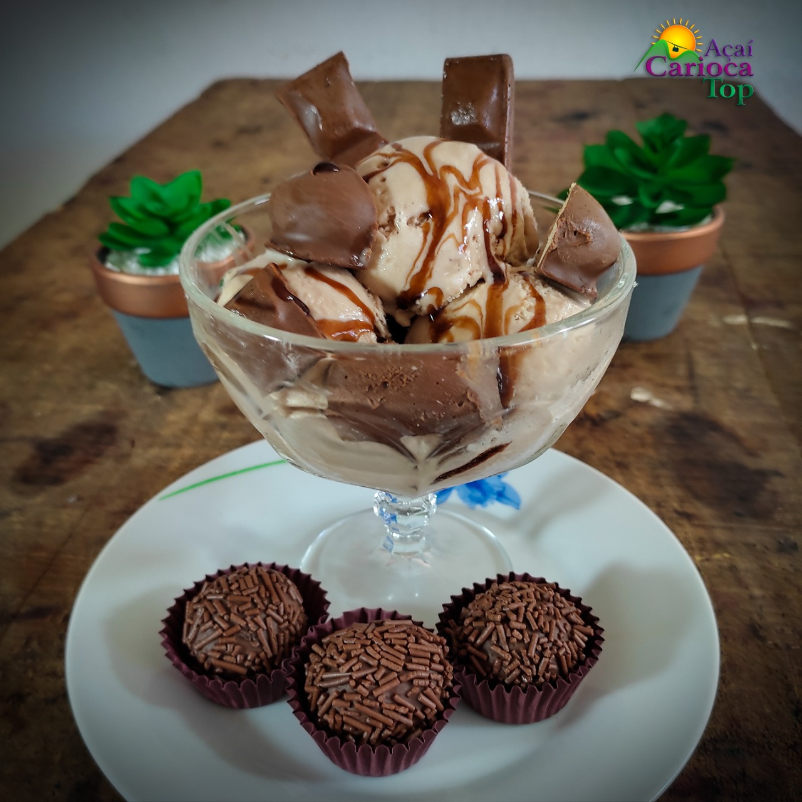

Recomendamos os vídeos abaixo:
Nós utilizamos produtos naturais! No nosso açaí e no nosso cupuaçú não utilizamos conservantes industrializados ou outros produtos utilizados na fabricação dos sorvertes.
Ao consumir os nossos produtos, terá a tranquilidade de ingerir produtos de qualidade, procedência e saúde!
Nosso estabelecimento está localizado no balneário mais badalado do Estado do Espírito Santo, em Guarapari!
 Açaí
Açaí Cupuaçú
Cupuaçú Sorvetes
Sorvetes Picolés
Picolés